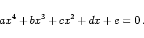

Inhalt Index DeskTop Bronstein

 Arithmetik Algebraische und transzendente Gleichungen Gleichungen 1. bis 4. Grades
Arithmetik Algebraische und transzendente Gleichungen Gleichungen 1. bis 4. Grades


|  | (1.161) |
Sind alle Koeffizienten dieser Gleichung reell, dann hat sie keine oder 2 oder 4 reelle Lösungen.
mit Hilfe der Formeln
| (1.162b) |
berechnet werden.
Für a = e und b = d werden die Wurzeln der Gleichung
| ax4 + bx3 + cx2 + bx + a = 0 | (1.162c) |
mit Hilfe der Formeln
| (1.162d) |
berechnet.
Hinweis: Zur Lösung der allgemeinen Gleichung 4. Grades werden in den nächsten beiden Abschnitten zwei Methoden betrachtet. Eine dritte Lösungsmethode beruht auf Näherungsverfahren.